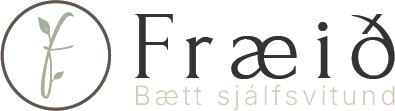
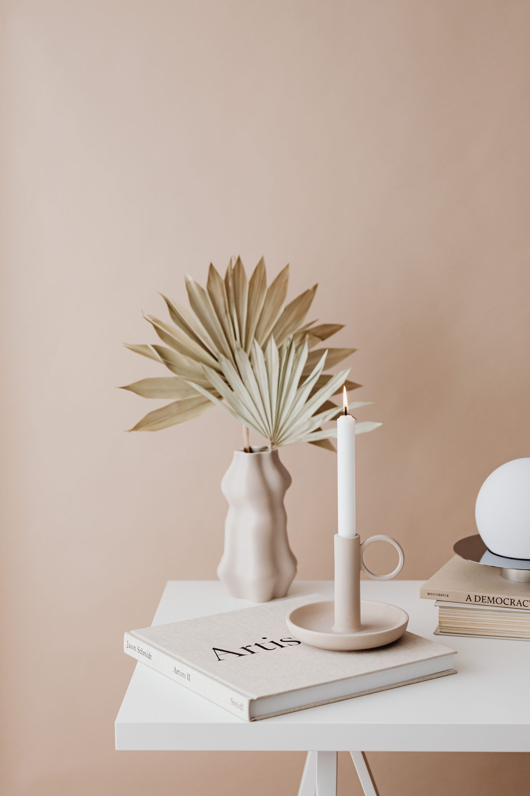

Marina's brief, 4 Nov: logo and words on the left, an image on the right about half the page, in Emilia's arch shape; welcoming, personal, trustworthy, and holding everything she offers (treatment, learning, calming objects for home).
Real = Emilia's own photo or design. Stand-in = shows the idea; the final image comes from her photographer or an AI image (not generated yet).
Back to what Emilia designed herself: the sage arch with her sprout mark in an ivory circle, now larger and with the thin line and dot from her brand board. Calm and recognisably hers, but no person, so it is the least personal.

Klínísk dáleiðsla · Hugræn endurforritun
Fyrir þig sem vilt skilja þig betur, vinna með gömul mynstur og skapa meiri ró og jafnvægi.
The same arch, but filled with a photo of Emilia smiling to camera: the most personal welcome, and it works today with the photo she sent (among trees). A new photo in her room at Ármúli 23 from her photographer friend would be even better.
Same layout as 2, with the photo from her Facebook: Emilia smiling, holding her diploma from Dáleiðsluskóli Íslands. Personal and it shows she is trained, which builds trust for a therapist. The room (painting, plants) also feels calm and homely. It's a phone photo, so a sharper version would be better for launch.
Like the example Emilia showed you: someone resting, relaxed under a blanket, with the therapist sitting calmly beside them. It shows what a session feels like and builds trust. Real version: her photographer friend, Emilia + a willing model. Quick version: an AI image with anonymous people (prompt 3a in the brief). Never an AI Emilia.
Öruggt og rólegt rými þar sem þú vinnur á þínum hraða.
Image here: a person resting under a linen blanket in a reclining chair; the therapist sits beside them, seen from the side.Photo shoot, or AI prompt 3a (anonymous people)
One calm image that holds everything: treatment, learning and the objects she wants to make (candles, journals, blankets, oils). The small chips under the text point to each part of the site. The photo here is one of her "found" mood pictures (Kaboompics) just to show the feel; the final one is her own products or an AI still life (prompt 4a).
Meðferð, fræðsla og ró heima, allt á einum stað.

mood photo (Kaboompics, free licence)